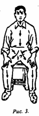

300 вопросов о цигун. Секреты китайской медицины. Содержание
Положение сидя также является одним из основных при выполнении упражнений цигуна. Различают позиции "сидеть прямо" и "сидеть прислонившись".
Позиция "сидеть прямо". Сесть на скамейку, естественно выпрямиться, голову держать прямо. Плечи свободно опущены, грудь слегка вогнута, ладони обеих рук лежат на коленях. Обе ноги стоят на полу, носками вперед, ступни раздвинуты на ширину плеч. Между верхней частью тела и бедрами, а также между бедрами и голенью угол примерно 90°. Рот слегка прикрыт, веки слегка опущены (рис. 3).

Позиция "сидеть прислонившись". Позиция такая же, как и предыдущая, однако начиная выполнять упражнение в позиции "сидеть прямо", можно при недостатке сил опираться на спинку стула или стену.
При выполнении упражнений в положении сидя можно выбирать соответствующие способы концентрации и дыхания.
300 вопросов о цигун. Секреты китайской медицины. Содержание